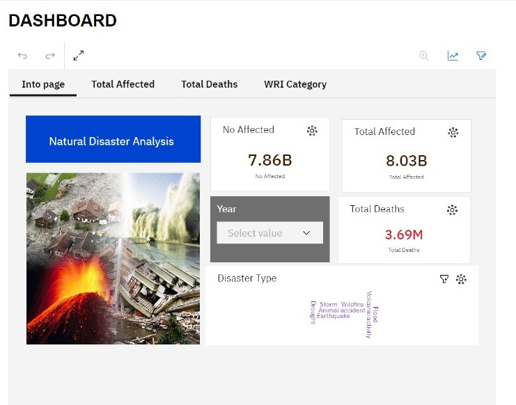
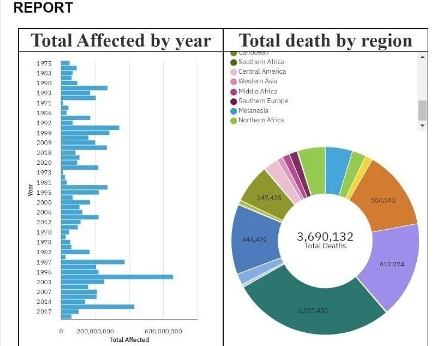
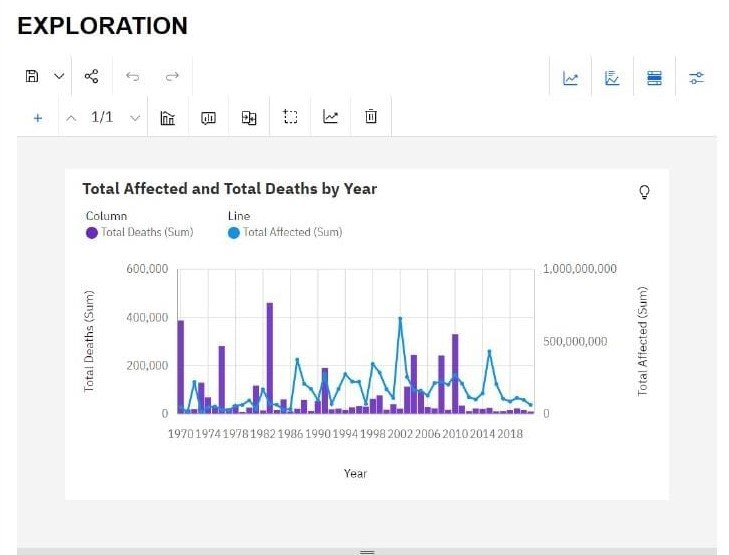

INTRODUCTION
Natural disasters, including earthquakes, hurricanes, floods, wildfires, and tsunamis, have devastating consequences on communities worldwide. This is to analyze natural disaster risk and propose migration strategies to enhance resilience and reduce vulnerability. Through a comprehensive review of existing literature, methodologies, and case studies, this study seeks to provide insights into effective strategies for managing disaster-induced migration.
DASHBOARD
This sample image illustrates the report:
REPORT
This sample image illustrates the report:
EXPLORATION
This sample image illustrates the report:
CONCLUSION
Natural disasters present complex challenges that require coordinated and proactive responses. By analyzing risk factors, engaging communities, and developing comprehensive migration strategies, we can enhance resilience and reduce the human and economic toll of disasters. This report serves as a starting point for further research and action in this critical area, emphasizing the importance of collaboration, innovation, and long-term planning in building disaster-resilient communities.